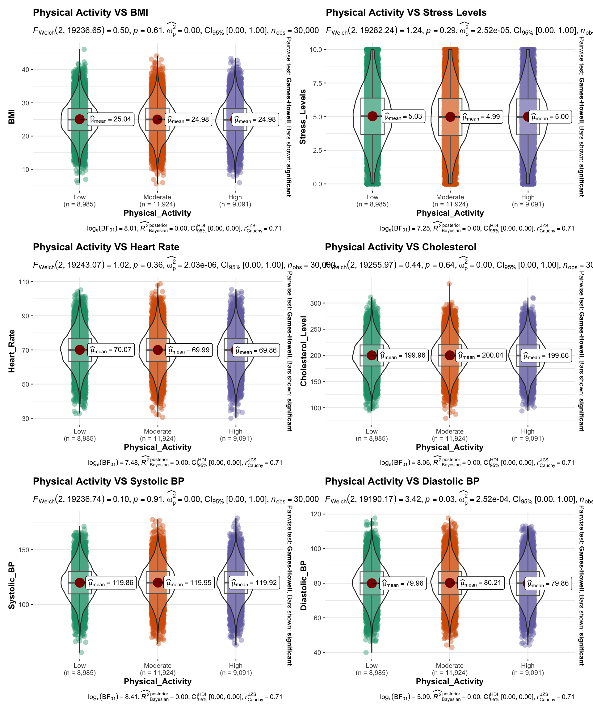
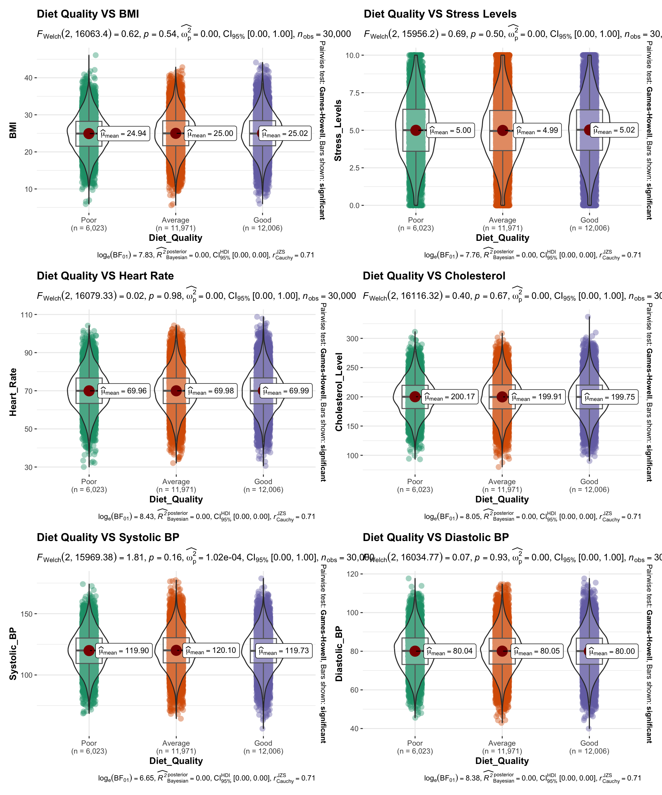
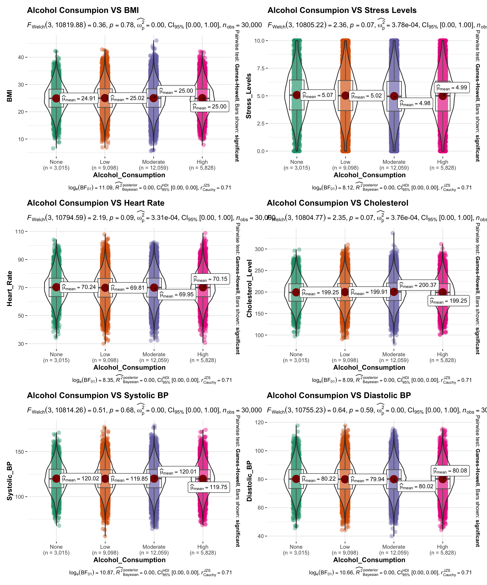

Disclaimer: The content has been parsed through various LLMs for refinement.
1 Overview
1.1 Background
Cardiovascular diseases (CVDs) remain a major health concern in Japan, ranking as the second and fourth leading causes of death, according to recent statistics [1]. While overall CVD mortality has declined, challenges continue to exist in certain demographics and regions. In particular, the incidence of ischemic heart disease is projected to rise among urban male employees and middle-aged men [2]. Although projections suggest a potential decline in CVD-related deaths across most Japanese prefectures between 2020 and 2040 [3], this trend is not uniform. The evolving landscape of risk factors necessitates ongoing vigilance and targeted interventions.
1.2 Objectives
We will first examine risk factors beyond individual control before focusing on modifiable factors. The outcome variable (O) will be Heart Attack Occurrence. The goal is to provide recommendations for reducing heart attack risk by emphasizing controllable factors while recognizing the influence of non-modifiable ones.
Factors Beyond Individual Control (U)
Demographics & Medical History
Key analyses:
Examining age and sex distribution among heart attack patients.
Investigating how medical history contributes to individual risk.
Assessing the impact of all the uncontrollable factors on heart attack risk.
Modifiable Risk Factors (M)
Lifestyle & Behavioral Factors, Physical & Medical Indicators
Key analyses:
Examining the relationship between lifestyle behaviors and physical/medical indicators.
Comparing univariate and multivariate models to understand how these factors interact.
1.3 References
Ministry of Health, Labour and Welfare, Japan. (2022). The 2021 vital statistics [in Japanese]. Link
Converts statistical model outputs into tidy data frames for easy manipulation.
ComplexUpset
Creates complex UpSet plots for visualizing intersections of sets.
corrplot
Visualizes correlation matrices with customizable plots.
easystats
A suite of tools for statistical modeling and interpretation.
ggdist
Creates visualizations for distributions and uncertainty in ggplot2.
ggstatsplot
Produces enhanced statistical plots with significance tests.
gtsummary
Creates elegant summary tables for regression models and descriptive statistics.
patchwork
Combines multiple ggplot2 plots into single layouts easily.
SmartEDA
Performs automated exploratory data analysis (EDA) with summaries and visuals.
tidyverse
A collection of packages for data manipulation, visualization, and analysis.
2.2 Data Source
2.2.1 About the Data Source
The dataset was originally retrieved from this Kaggle repository. However, as of February 16, 2025, the page is no longer accessible, and we are unable to retrieve the dataset.
According to the author, the dataset included:
Demographic data (e.g., age, sex, region)
Medical history
Lifestyle & behavioral factors
Physical & medical indicators
Electrocardiographic (ECG) data
Further details will be discussed in the data wrangling section. We have also extracted Japan population data from here.
2.2.2 Considerations and Limitations
Several uncertainties and limitations must be acknowledged regarding this dataset:
Study Design & Temporal Issues
This is unlikely to be a cohort study and, at best, might be a retrospective cohort study. We assume it is a case-control study, but key uncertainties remain.
It is unclear whether certain health indicators (e.g., BMI, physical activity levels) were recorded before or after the heart attack. This means:
Reverse causation is possible (e.g., Did individuals have high BMI before their heart attack, or did they gain weight due to post-event health deterioration?).
Behavioral changes post-heart attack could influence results (e.g., Did those with high physical activity levels increase their exercise habits after experiencing a heart attack?).
Unclear Baseline & Regional Ambiguity
The dataset does not clarify whether the recorded region (urban/rural) reflects where individuals lived most of their lives.
Migration post-heart attack could affect interpretations (e.g., Did individuals move to an urban area for better healthcare, or relocate to a rural area for a lower-stress lifestyle?).
Missing Information
No details are provided on heart attack severity (e.g., intensity, number of occurrences).
Potential Sampling Bias
Survivorship bias: Individuals who died from a heart attack may not be included, affecting representativeness.
Population Uncertainty
The dataset does not specify whether participants are Japanese nationals or residents of Japan, which could have implications for generalizability.
These limitations should be considered when interpreting any associations, as correlation does not imply causation, and some findings may be bidirectional.
There were 15 columns named Extra_Columns_ that were provided in the dataset. The initial suspicion was that it could be the ECG data as the authors claimed that ECG data was provided.
Visualizing the 15 unknown columns
original_colors <-c("#ddb1b1", "#d0839a", "#8cb8c5", "#e7a43b", "#e72222")custom_palette <-colorRampPalette(c("#d0839a", "#ddb1b1", "#8cb8c5"))(100)repeating_palette <-rep(original_colors, length.out =100)df_last_15 <- df %>%select(tail(names(df), 15)) %>%rename_with(~gsub("Extra_Column_", "Col_", .x)) df_check <- df_last_15 %>%slice_sample(n =100) %>%t() %>%as.data.frame() %>%mutate(row =row_number()) %>%pivot_longer(cols =-row, names_to ="sample", values_to ="value")sample_lineplot <-ggplot(df_check, aes(x = row, y = value, color = sample)) +geom_line() +scale_color_manual(values = repeating_palette) +labs(x ="Row", y ="Value", title ="LinePlot of Extra Columns",subtitle ="Subsample of n = 100") +theme_minimal() +theme(legend.position ="none")last15_corrplot <- ggstatsplot::ggcorrmat(data = df_last_15, ggcorrplot.args =list(outline.color ="black", hc.order =TRUE,tl.cex =10),colors = custom_palette,title ="Correlogram for ",subtitle ="Four pairs are no significant at p < 0.05") +theme_minimal() +theme(axis.title.x =element_blank(),axis.title.y =element_blank(),axis.text.x =element_text(angle =45, hjust =1))combined_plot <- sample_lineplot + last15_corrplotcombined_plot
Upon closer examination of the data, several concerning observations were made:
Visualization Issues: Sub-samples of the data, when plotted, do not resemble typical ECG wave-forms (Left). Another suspicion was that it could be derived features, such as single heartbeat feature (PQRST) extracted from the ECG signal and features [1].
Lack of Correlation: Contrary to expectations for ECG-derived features, there is no correlation observed among the features (Right). Typically, some level of correlation would be expected in signal data.
Statistical Analysis: A Kruskal-Wallis test using the 15 features to examine heart attack occurrence revealed no significant differences.
Given these findings and in the interest of explanatory modelling, it has been decided to exclude these unknown features from further analysis. This decision is based on initial checks suggesting limited utility of these features, although a comprehensive multivariate analysis was not conducted. The focus will shift to more reliable and interpretable variables for the study of heart attack risk factors.
The code blocks above are the initial EDA tests ran. The insights are as follows:
Distribution of Variables: Most numerical variables exhibit normal distribution patterns. Age stands out as an exception, showing a uniform distribution across the sample.
Heart Attack Incidence: A relatively small proportion (10%) of participants reported experiencing a heart attack.
Demographic Characteristics: Gender representation is nearly balanced in the sample. Majority of the respondents (70%) were from the Urban region.
Relationship Between Variables and Heart Attack Occurrence:
Correlation Analysis: Scatter plots reveal no apparent correlations between pairs of numerical variables.
Distribution Comparison: Boxplot analysis shows substantial overlap in the distributions of numerical variables between those who experienced heart attacks and those who did not, indicating no clear distinctions based on these variables alone.
3.3 Binning Numerical Variables
The intent of binning numerical variables is to obtain more interpretable odds ratios when modeling.
The bins are as follows:
Age: The age variable is divided into 12 categories, spanning from 18 to 80 years old, with 5-year intervals (e.g., 18-24, 25-29, 30-34, etc.).
BMI (Body Mass Index): BMI is categorized into four groups based on standard classifications [2]:
Underweight: Less than 18.5
Normal: 18.5 to less than 25
Pre-Obese: 25 to 30
Obese: 30 or greater
Cholesterol: Cholesterol levels are grouped into three categories [4]:
Low: Less than 120 mg/dL
Normal: 120 to less than 219 mg/dL
High: 219 mg/dL or greater
Stress: Stress levels are divided into five categories based on a 0-10 scale:
Very Low: 0 to 2
Low: 2 to 4
Moderate: 4 to 6
High: 6 to 8
Very High: 8 to 10
Heart Rate: Heart rate is categorized into eight groups, with 10 beats per minute intervals, ranging from less than 40 to 110 beats per minute.
Blood Pressure: Blood pressure grades are categorized according to [3].
# From here https://epirhandbook.com/en/new_pages/age_pyramid.html p3 <-ggplot()+geom_col(data = pyramid_data %>%filter(data_source =="population"),mapping =aes(x = Age_Group,y = weighted_pct,fill = Gender),colour ="black", # black color around barsalpha =0.2, # more transparentwidth =1)+# full widthgeom_col(data = pyramid_data %>%filter(data_source =="cases"), mapping =aes(x = Age_Group, # age categories as original X axisy = weighted_pct, # % as original Y-axisfill = Gender), # fill of bars by gendercolour ="black", # black color around barsalpha =1, # not transparent width =0.3)+# half widthcoord_flip()+scale_x_discrete(limits = age_labels) +scale_y_continuous(limits =c(min_per, max_per), breaks =seq(floor(min_per), ceiling(max_per), by =2), labels =paste0( abs(seq(floor(min_per), ceiling(max_per), by =2)), "%"))+# designate colors and legend labels manuallyscale_fill_manual(values =c("Female"="#d0839a","Male"="#8cb8c5"),labels =c("Female"="Female","Male"="Male"), ) +# plot labels, titles, caption labs(title ="Age and gender distribution of respondents with heart attack,\nas compared to baseline population",subtitle ="The age and gender distribution has been weighted based on the Japan population",x ="Age Category",y ="Weighted Percentage of Total (%)",fill =NULL,caption = stringr::str_glue("Cases shown on top of adjusted sample demographic baseline\nData from Kaggle, n = {nrow(df)}")) +# optional aesthetic themestheme(legend.position ="bottom", # move legend to bottompanel.grid.major =element_blank(),panel.grid.minor =element_blank(),panel.background =element_blank(),axis.line =element_line(colour ="black"),plot.title =element_text(hjust =0), plot.caption =element_text(hjust=0, size=11, face ="italic"))(p1+p2)/p3 +plot_layout(heights =c(3, 7))
This visualization presents a comparative analysis of age and gender distributions across three different populations:
Japan’s General Population (Top-left)
Shows the natural age and gender distribution in Japan.
Males and females are represented by different colors.
Study Sample Distribution (Top-right)
Represents the age and gender composition of the dataset used for analysis.
Helps assess how well the sample represents the actual Japanese population.
Heart Attack Cases (Bottom Panel, Weighted by Japan’s Population)
Illustrates the age and gender distribution of individuals who reported heart attack occurrences.
Bars in the background represent the adjusted (based on population distributed) baseline sample distribution
The darker bars show the proportion of heart attack cases, allowing for direct comparison - if the bars are outside the baseline, means this group has larger representation in the heart attack cases.
The key observations are:
Higher Heart Attack Incidence in Older Age Groups: The proportion of heart attack cases increases with age, especially in individuals aged 50 and above.
Gender Differences:
Males have a higher representation in heart attack cases compared to females in most age groups.
This pattern aligns with existing medical research suggesting that men are at a higher risk of cardiovascular diseases at younger ages.
Lower Incidence in Younger Groups:
The 18-29 age group has the lowest proportion of heart attack cases, aligning with the expected lower risk for younger individuals.
Sample Representativeness:
The sample (top-right) appears to be well-distributed compared to the general Japanese population (top-left), suggesting that findings may be broadly applicable.
4.2 Does Your Medical History Decide Your Heart Attack Risk?
Creating the combination plot
mean_proportion <-mean(new_df2$Heart_Attack_Occurrence, na.rm =TRUE)mean_BMI <-mean(new_df2$BMI, na.rm =TRUE)new_df2$Heart_Attack_Occurrence2 <-factor(new_df2$Heart_Attack_Occurrence, levels =c("0", "1"))p <- ComplexUpset::upset(new_df2, c("Smoking_History", "Diabetes_History", "Hypertension_History", "Family_History"), name='Medical History',base_annotations=list('Intersection size'=intersection_size() ),annotations =list('Heart Attack Occurrence'=list(aes =aes(x = intersection, fill = Heart_Attack_Occurrence2),geom =list(geom_bar(stat ='count', position ='fill', na.rm =TRUE),geom_hline(yintercept = mean_proportion, linetype ="dashed", color ="black"),annotate("text", x =Inf, y = mean_proportion, label =sprintf("%.2f", mean_proportion*100), # Annotate with a % at the end. hjust =1.4, vjust =-0.5, color ="black", size =3),scale_fill_manual(name ="Heart Attack",values =c("0"=alpha("#e7a43b", 0.8), "1"="#e72222"), labels =c("1"="Yes", "0"="No") ),geom_text(aes(label=!!aes_percentage(relative_to='intersection'),group=Heart_Attack_Occurrence2 ),stat='count',position=position_fill(vjust = .5) ),scale_y_continuous(labels=scales::percent_format()) )) ),width_ratio =0.1,wrap=TRUE) +ggtitle("Impact of Medical History on Heart Attack Occurrence: An Upset and Proportional Analysis")p
This visualization consists of two key components:
Stacked Bar Plot (Top Panel) – Heart Attack Occurrence by Medical History Intersection:
Each bar represents a specific combination of medical history factors (Smoking, Family History, Hypertension, Diabetes). The red portion (percentage labeled) represents individuals who experienced a heart attack, while the orange portion represents those who did not.
The proportion of heart attack occurrences ranges from 9% to 14%, indicating that certain medical history combinations are associated with a higher likelihood of heart attacks.
The highest risk categories (12–14% heart attack rate) involve individuals with multiple conditions, such as hypertension, diabetes, and smoking history.
Upset Plot (Bottom Panel) – Medical History Combinations and Frequencies:
The bar heights indicate the number of individuals in each medical history category.
The largest group (8,791 individuals) has no recorded medical history of these conditions.
Other major groups include individuals with family history, hypertension, and smoking history in different combinations.
The dots below the bars indicate the specific medical conditions present in each group, with multiple black dots showing co-occurring risk factors.
Groups with three or more risk factors have fewer individuals but show higher heart attack rates, reinforcing the cumulative effect of these conditions.
Individuals with multiple risk factors (e.g., smoking + hypertension + diabetes) are at higher risk of heart attacks compared to the average. Preventive measures should focus on individuals with multiple risk factors, as they represent the highest-risk categories.
4.3 How Do Uncontrollable Factors Interact in Determining Your Heart Attack Risk?
Univariate regression
univ_tab <-tbl_uvregression( new_df2,method = glm, ## define regression want to run (generalised linear model)y = Heart_Attack_Occurrence, include =c("Age_Group", "Gender", "Region", "Smoking_History", "Diabetes_History","Hypertension_History", "Family_History"),method.args =list(family = binomial), ## define what type of glm want to run (logistic)exponentiate =TRUE## exponentiate to produce odds ratios (rather than log odds) )
Multivariate regression
explanatory_vars <-c("Age_Group", "Gender", "Region", "Smoking_History", "Diabetes_History","Hypertension_History", "Family_History")mv_reg <- explanatory_vars %>%## begin with vector of explanatory column namesstr_c(collapse ="+") %>%## combine all names of the variables of interest separated by a plusstr_c("Heart_Attack_Occurrence ~ ", .) %>%## combine the names of variables of interest with outcome in formula styleglm(family ="binomial", ## define type of glm as logistic,data = new_df2) ## define your datasetfinal_mv_reg <- mv_reg %>%step(direction ="forward", trace =FALSE)mv_tab <-tbl_regression(final_mv_reg, exponentiate =TRUE)
The table presents the odds ratios and confidence intervals for various factors associated with heart attack occurrence, comparing results from univariate and multivariate logistic regression models. The odds ratios remain largely unchanged between the two models, indicating that there is minimal confounding among the included variables. This suggests that each factor—such as age group, smoking history, hypertension, diabetes, and family history—contributes independently to heart attack risk rather than being strongly influenced by other factors in the model. Notably, only the 35-39 age group shows a significantly higher risk, while the other factors do not exhibit statistically significant associations. Further analyses, such as interaction tests, may be needed to explore potential combined effects between variables.
Regression coefficients
final_mv_reg %>%model_parameters(exponentiate =TRUE) %>%plot() +labs(title ="Odds Ratio of Heart Attack Occurrence (Multivariate Model)") +scale_color_manual(values=c("#e72222", "#8cb8c5"))
This plot presents the odds ratio of heart attack occurrence, derived from a logistic regression model. In logistic regression, the coefficients represent the log-odds of an event occurring (in this case, a heart attack), and when exponentiated, they translate into odds ratios (ORs). An odds ratio above 1 indicates an increased risk, while an odds ratio below 1 suggests a reduced risk.
Each point represents the estimated odds ratio for a given variable, with the horizontal bars denoting the confidence intervals. If a confidence interval crosses the vertical dashed line at 1.00 (the null value), it suggests that the effect is not statistically significant.
The age group 35-39 is the only category with a significantly higher risk of heart attack, as indicated by its confidence interval not crossing 1.
Other age groups show varying odds ratios, but their confidence intervals include 1, suggesting no strong evidence of increased risk.
Similarly, gender, urban/rural region, and medical history factors such as smoking, diabetes, hypertension, and family history exhibit varying effects, but none are statistically significant.
Despite variations in odds ratios across age groups and medical history factors, the only statistically significant predictor of increased heart attack risk in this model is being in the 35-39 age group. Other factors may still contribute to risk, but this model does not find strong enough evidence to confirm their impact.
Model Diagnostic
check_model(final_mv_reg)
Posterior Predictive Check: Observed and model-predicted data align well, indicating good overall fit.
Binned Residuals: Several residuals fall outside error bounds, particularly between 10%–11% predicted probabilities, suggesting model miscalibration.
Influential Observations: All the points are within the contour lines.
Collinearity: All predictors have VIF values below 5, ruling out multicollinearity concerns.
Uniformity of Residuals: Residuals follow the expected distribution, suggesting no significant pattern in errors.
The model fits the data well but shows issues with calibration. For probability calibration, Platt scaling or isotonic regression could be considered. Model could be refined by adding interaction or polynomial terms.
4.4 Does Your Behavioural and Lifestyle Factors Influence Your Medical Indicators?
Physical Activity VS Numerical Values
p1 <-ggbetweenstats(new_df2,x = Physical_Activity,y = BMI,pairwise.comparisons =TRUE, title ="Physical Activity VS BMI")p2 <-ggbetweenstats(new_df2,x = Physical_Activity,y = Stress_Levels,pairwise.comparisons =TRUE, title ="Physical Activity VS Stress Levels")p3 <-ggbetweenstats(new_df2,x = Physical_Activity,y = Heart_Rate,pairwise.comparisons =TRUE, title ="Physical Activity VS Heart Rate")p4 <-ggbetweenstats(new_df2,x = Physical_Activity,y = Cholesterol_Level,pairwise.comparisons =TRUE, title ="Physical Activity VS Cholesterol")p5 <-ggbetweenstats(new_df2,x = Physical_Activity,y = Systolic_BP,pairwise.comparisons =TRUE, title ="Physical Activity VS Systolic BP")p6 <-ggbetweenstats(new_df2,x = Physical_Activity,y = Diastolic_BP,pairwise.comparisons =TRUE, title ="Physical Activity VS Diastolic BP")
Physical Activity VS Numerical Factors
(p1 + p2)/(p3 + p4)/(p5 + p6)

BMI: No significant difference across activity levels (p = 0.61), with mean BMIs around 25.
Stress Levels: No significant effect of physical activity (p = 0.29), stress averages ~5.
Heart Rate: Minimal difference between groups (p = 0.36), with means around 70 bpm.
Cholesterol Levels: No significant variation by activity level (p = 0.64), averages ~200 mg/dL.
Systolic Blood Pressure (BP): No effect of activity on systolic BP (p = 0.91), means ~119 mmHg.
Diastolic Blood Pressure (BP): Slightly lower diastolic BP with higher activity (p = 0.03), but differences are small (79.96 to 79.21 mmHg).
Physical activity has minimal impact on these health metrics, with only a minor difference in diastolic BP. Other metrics show no significant differences.
Diet Quality VS Numerical Values
pd1 <-ggbetweenstats(new_df2,x = Diet_Quality,y = BMI,pairwise.comparisons =TRUE, title ="Diet Quality VS BMI")pd2 <-ggbetweenstats(new_df2,x = Diet_Quality,y = Stress_Levels,pairwise.comparisons =TRUE, title ="Diet Quality VS Stress Levels")pd3 <-ggbetweenstats(new_df2,x = Diet_Quality,y = Heart_Rate,pairwise.comparisons =TRUE, title ="Diet Quality VS Heart Rate")pd4 <-ggbetweenstats(new_df2,x = Diet_Quality,y = Cholesterol_Level,pairwise.comparisons =TRUE, title ="Diet Quality VS Cholesterol")pd5 <-ggbetweenstats(new_df2,x = Diet_Quality,y = Systolic_BP,pairwise.comparisons =TRUE, title ="Diet Quality VS Systolic BP")pd6 <-ggbetweenstats(new_df2,x = Diet_Quality,y = Diastolic_BP,pairwise.comparisons =TRUE, title ="Diet Quality VS Diastolic BP")
Diet Quality VS Numerical Factors
(pd1 + pd2)/(pd3 + pd4)/(pd5 + pd6)

BMI: No significant difference across diet quality levels (p = 0.54), with mean BMIs around 25.
Stress Levels: Minor differences, not significant (p = 0.50), with averages ~5.
Heart Rate: No significant variation (p = 0.98), means ~70 bpm.
Systolic Blood Pressure (BP): Slight variation but not significant (p = 0.16), means ~120 mmHg.
Diastolic Blood Pressure (BP): No significant difference (p = 0.93), means ~80 mmHg.
Diet quality has no significant impact on BMI, stress, heart rate, cholesterol, or blood pressure. All health metrics remain stable regardless of diet quality.
Alcohol Consumption VS Numerical Values
pa1 <-ggbetweenstats(new_df2,x = Alcohol_Consumption,y = BMI,pairwise.comparisons =TRUE, title ="Alcohol Consumpion VS BMI")pa2 <-ggbetweenstats(new_df2,x = Alcohol_Consumption,y = Stress_Levels,pairwise.comparisons =TRUE, title ="Alcohol Consumpion VS Stress Levels")pa3 <-ggbetweenstats(new_df2,x = Alcohol_Consumption,y = Heart_Rate,pairwise.comparisons =TRUE, title ="Alcohol Consumpion VS Heart Rate")pa4 <-ggbetweenstats(new_df2,x = Alcohol_Consumption,y = Cholesterol_Level,pairwise.comparisons =TRUE, title ="Alcohol Consumpion VS Cholesterol")pa5 <-ggbetweenstats(new_df2,x = Alcohol_Consumption,y = Systolic_BP,pairwise.comparisons =TRUE, title ="Alcohol Consumpion VS Systolic BP")pa6 <-ggbetweenstats(new_df2,x = Alcohol_Consumption,y = Diastolic_BP,pairwise.comparisons =TRUE, title ="Alcohol Consumpion VS Diastolic BP")
Alcohol Consumption VS Numerical Factors
(pa1 + pa2)/(pa3 + pa4)/(pa5 + pa6)

BMI: No significant difference across alcohol consumption levels (p = 0.78), with mean BMIs around 25.
Stress Levels: Slight variation but not significant (p = 0.07), with stress averages around 5.
Heart Rate: Minor differences but not significant (p = 0.09), with means around 70 bpm.
Cholesterol Levels: No significant variation (p = 0.70), average levels ~200 mg/dL.
Systolic Blood Pressure (BP): No significant differences (p = 0.68), means ~120 mmHg.
Diastolic Blood Pressure (BP): No significant differences (p = 0.59), means around 80 mmHg.
Alcohol consumption shows no significant effect on BMI, stress, heart rate, cholesterol, or blood pressure. All metrics remain stable across consumption levels.
4.5 How Do Uncontrollable Factors Interact in Determining Your Heart Attack Risk?
Univariate regression - Modifiable factors
univ_tab <-tbl_uvregression( new_df2,method = glm, ## define regression want to run (generalised linear model)y = Heart_Attack_Occurrence, include =c("Physical_Activity", "Diet_Quality","Alcohol_Consumption", "BMI_Group","Heart_Rate_Group", "Blood_Pressure","Cholesterol", "Stress"),method.args =list(family = binomial), ## define what type of glm want to run (logistic)exponentiate =TRUE## exponentiate to produce odds ratios (rather than log odds) )
Multivariate regression - Modifiable factors
explanatory_vars <-c("Physical_Activity", "Diet_Quality","Alcohol_Consumption", "BMI_Group","Heart_Rate_Group", "Blood_Pressure","Cholesterol", "Stress")mv_reg <- explanatory_vars %>%## begin with vector of explanatory column namesstr_c(collapse ="+") %>%## combine all names of the variables of interest separated by a plusstr_c("Heart_Attack_Occurrence ~ ", .) %>%## combine the names of variables of interest with outcome in formula styleglm(family ="binomial", ## define type of glm as logistic,data = new_df2) ## define your datasetfinal_mv_reg <- mv_reg %>%step(direction ="forward", trace =FALSE)mv_tab <-tbl_regression(final_mv_reg, exponentiate =TRUE)
final_mv_reg %>%model_parameters(exponentiate =TRUE) %>%plot() +labs(title ="Odds Ratio of Heart Attack Occurrence (Multivariate Model)") +scale_color_manual(values=c("#e72222", "#8cb8c5"))
The multivariate model reveals two unexpected results. First, the Normal BMI group (18.5 to <25) is associated with a higher risk of heart attack, which may indicate an issue with the reference group—possibly using “underweight” instead of “overweight” as the baseline. Additionally, reverse causality could be at play, where chronic illnesses lower BMI but increase heart attack risk.
Second, high stress appears to lower heart attack risk, which is counter-intuitive. This may stem from survivourship bias, where individuals with heart conditions experience lifestyle adjustments that reduce stress levels. Additionally, measurement error from self-reported stress levels or unadjusted confounders, such as protective behaviors (e.g., exercise in high-stress careers), could influence this result.
To address these issues, we might want to check the model’s reference groups, adjust for comorbidities, and include interaction terms (e.g., stress × age).
Model Diagnostic
check_model(final_mv_reg)
4.6 Conclusion
The analysis aimed to explore heart attack risk across demographics and identified that individuals aged 35–39 have a higher odds ratio. However, when evaluating lifestyle factors, the results were inconsistent. There were significant discrepancies between physical and medical indicators, and the controllable factors model produced counter-intuitive results, such as high stress showing a protective effect. These issues make it difficult to derive clear recommendations for lifestyle adjustments.
To address these concerns, it is essential to refine the model by reviewing reference groups to ensure appropriate baselines, such as using “normal BMI” and “low stress” as references. Additionally, including interaction terms (e.g., age × physical activity, stress × BMI) and adjusting for potential confounders, such as smoking and family history, can improve accuracy. A stratified analysis by age should also be performed, focusing on the 35–39 cohort to detect age-specific patterns.